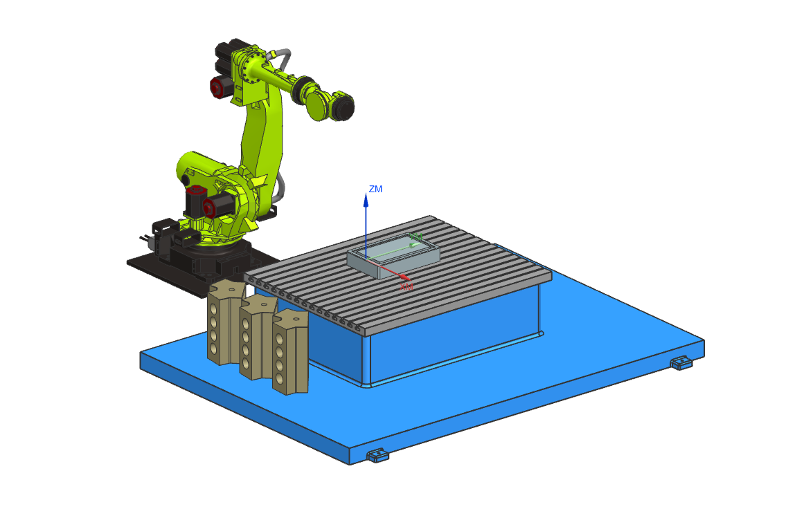

Gyroscope / IMU Package
6-axis inertial measurement unit designed for UAV guidance and control demos.

$179 / each
Overview
This mock IMU package simulates the type of inertial sensor used in UAVs, CubeSats, robotics experiments, and aerospace controls coursework. Included only as a product example for the OrbitCart CSC 317 term project.
Specifications (Conceptual)
- 3-axis gyroscope
- 3-axis accelerometer
- UART / I2C demo interface
- Pairs with the Flight Computer mock product